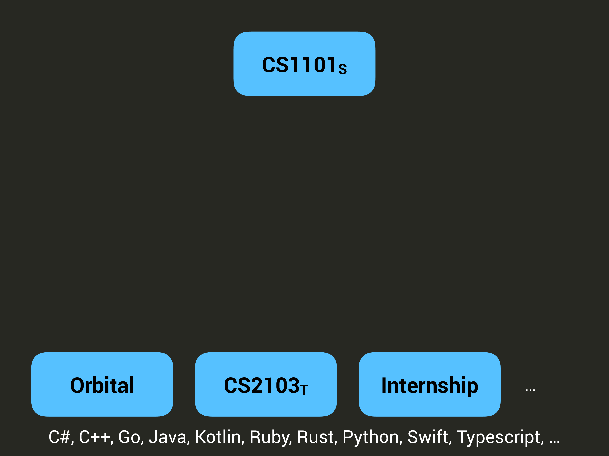
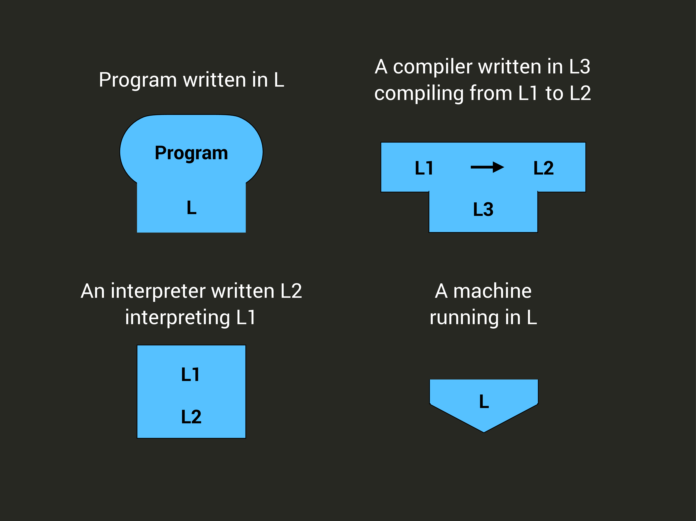
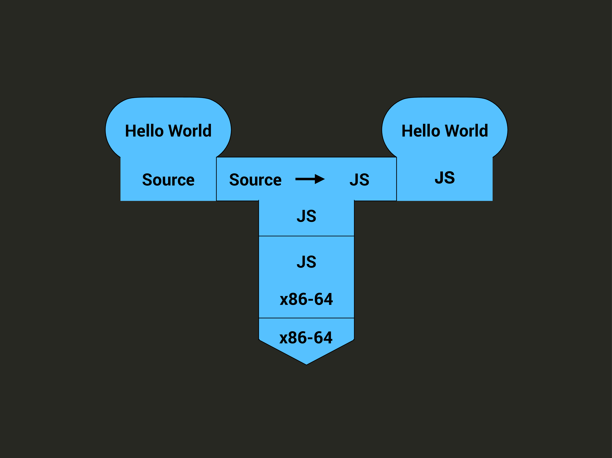
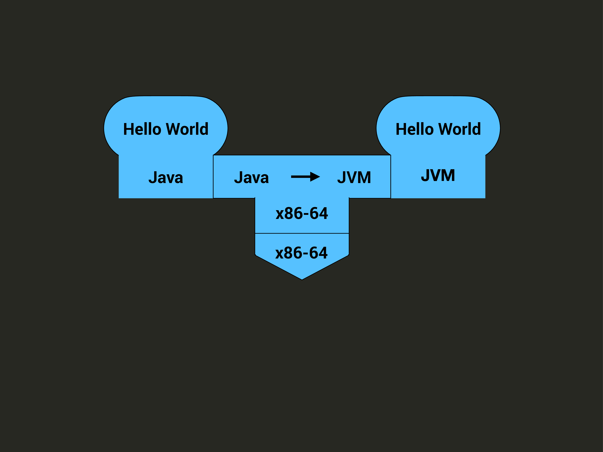
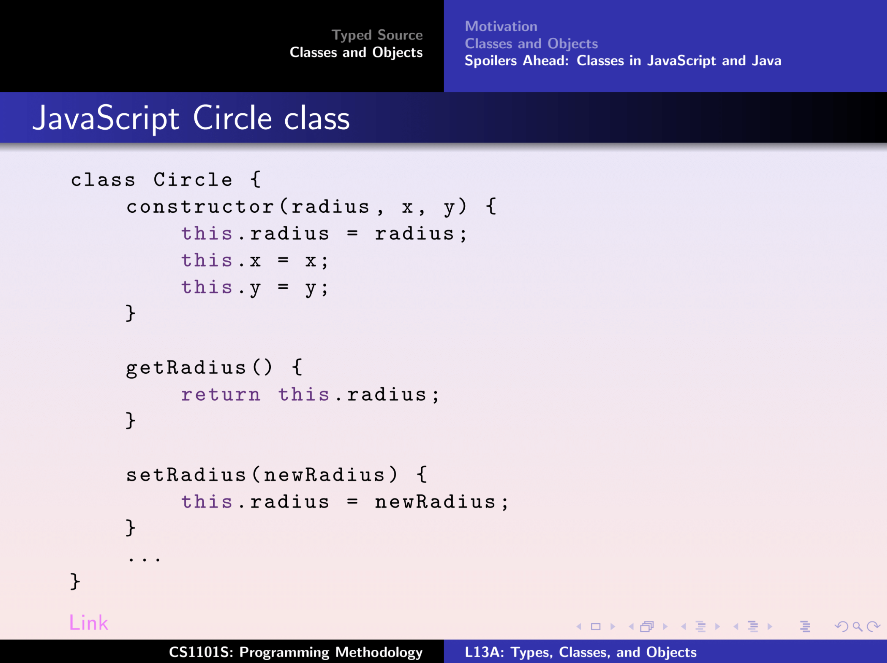

class: middle, center ## CS2030<sub>s</sub> ### Programming Methodology II --- class: middle, center ## Lecture 1 ### 12 January 2026 --- class: top,center ### Academic Staff <b>Boyd</b> Anderson<br> <b>Ashish</b> Dandekar<br> Ooi <b>Wei Tsang</b><br> ### Recitation Instructors <b>Enzio</B> Kam<br> <b>Brian</b> Cheong<br> Ma <b>Yuan</b><br> --- class: top,center ### UG Tutors 50 of them<br> --- class: top,center ### Course Administrative Manager <b>Enzio</B> Kam<br> --- class: top ### Important Online Resources - [Canvas](https://canvas.nus.edu.sg/courses/85330) - [Handbook](https://nus-cs2030s.github.io/2526-s2/) - [Ed Discussion](https://edstem.org/us/courses/91875/discussion) - [RT Ticketing System](https://mysoc.nus.edu.sg/app/cs2030s) --- class: middle,center ## Administrative Matters --- class: top ### Communicating with the Teaching Team - Curricular-related questions: use Ed forum - Administrative-related questions: use CS2030S Ticketing System - No direct emails to academic staff unless for sensitive or personal matter - If you must email, email to `cs2030s@nus.edu.sg` - Prefix your email subject with [CS2030s] --- class: top ### Recitations and Lab Sessions - Start in Week 3 - Face-to-face lessons - Registration starts this week: manage via CourseReg --- class:top ### Lab and Recitation Registration - If you don't have a slot yet, don't panic. - Follow the process by bidding or appealing through CourseReg. - Refer to [CourseReg schedule here](https://www.nus.edu.sg/coursereg/schedule-and-timeline.html) - Do NOT email the teaching team - Do NOT submit tickets through RT --- class: top ### Vim and Unix Bootcamp and Clinics - Bootcamp: Wednesday 14 Jan, 3-5 PM, COM3 MPH - Clinics: Stay tuned for announcement on Canvas --- class: middle,center ## Course Information --- class: top,center .cols[ .fifty[ .tiny[ ### Formative | Percentage -----------------:|:-------------- Quizzes | 5% Lab Practicals | 5% Problem Sets | 0% Programming Exercises | 0% Past Year Papers | 0% ]] .fifty[ .tiny[ ### Summative | Percentage -----------------:|:-------------- Midterm | 20% Final | 30% 2$\times$ Practical Exams | 40% ]]] --- class: top ### Quizzes - Online weekly quizzes - Unlimited attempts (take highest score) - 191 marks over the semester (scored at least 70% for full marks) - No late submission or makeup quizzes --- class: top ### Lab Practicals - In-lab programming test - Simulate practical exams - 7 graded practicals over the semester (scored at least 70% for full marks) - No late submission or makeup quizzes --- class: top ### Programming Exercises The most important and useful component of CS2030S. We have many programming questions. Practice and learn. --- ### Plagiarism Policy - All weighted formative and summative assessments must be individual work. - We encourage discussion for formative assessments (except for graded in-lab practicals) but do not share code. - Disciplinary actions will be taken against plagiarism. --- ### Use of AI - Be familiar with NUS policy on AI usage. - You may use AI tools to assist your learning. - Example: OK to ask AI tools for explanations of concepts. Not for solutions to assignments. - AI is not available during summative assessments. Do not become dependent on it. --- class: top ### Important Dates .smaller[ Assessment | Date | Time :------------------|:-------------|:------------- Midterm | Mon, 2 Mar | 12 - 2 PM Practical Exam 1 | Sat, 7 Mar* | 12 - 6 PM Practical Exam 2 | Sat, 11 Apr* | 12 - 6 PM Final | Wed, 29 Apr | 1 - 3 PM \* Tentative ] --- class: top ### Optional "Catch-Up" Sessions - About every three or so weeks - Saturday 10 AM - 12 PM, On-site - Q&A format - No new material --- class:top ### Not "bell-curved" - Your grade is based solely on your marks - Not relative to others in the class. --- class: top ### Take care of yourself - Mental wellness is important. - If you can't cope or is falling behind, talk to us. --- class: middle,center ## Why CS2030<sub>s</sub>? --- class: top,center  --- class: top,center <img src="figures/cs2030s-lec01/cs2030s-lec01.001.png" width="800"> --- class: top Real-world software is complex, evolves continuously, and is a product of team work. --- class: top CS2030S teaches you how to write better code, where "better" means: - more human-friendly - easier to change and maintain - fewer crashes through programming paradigms, idioms, and language design. --- class: top CS2030S is not a course about - algorithms or efficiency - software design - Java language and libraries --- class: middle, center ## Lecture 1 ### 12 January 2026 --- After this lecture, you should understand the following differently from CS1101S: - think in terms of types, compilation, and abstraction boundaries, not just “does it run correctly” - errors are not just bugs; some are preventable by language design. --- class: middle,center ## How We Run Programs --- class: top,center ### T-Diagram  --- class: top,center <img src="figures/cs2030s-lec01/cs2030s-lec01.005.png" width="800"> --- class: top,center  --- class: top,center <img src="figures/cs2030s-lec01/cs2030s-lec01.007.png" width="800"> --- class: top,center ### The `javac` Compiler  --- class: top,center ### The `java` Runtime <img src="figures/cs2030s-lec01/cs2030s-lec01.010.png" width="800"> --- class: top,center ### The `jshell` Runtime <img src="figures/cs2030s-lec01/cs2030s-lec01.011.png" width="800"> --- class: top The compiler is our friend - it helps us catch errors early - but can only be based on the code, not by running it We will learn programming language features that allow compiler to catch more errors during compilation. --- class: middle,center ## Variable ### Abstraction over Data --- ### Recall Typed Source from CS1101S <center> <img src="figures/cs2030s-lec01/typescript.png" width="700"> </center> --- class: top ### Type - The _type_ of a variable decides the computation that can be performed on the variable. - The _type_ of a value decides the computation that can be performed on the value. --- class: top ### Type system - A type system is a set of rules about types of variables, values, expression, functions, and their interactions. --- class: center,middle ## Static vs. Dynamic Typed Language --- class: top ### Dynamically Typed - The type of a variable is associated with the value it currently holds. ```javascript let x = 4; // x is an integer x = "5"; // x is now a string ``` --- class: top ### Statically Typed - The type of a variable is declared and is fixed. ```Java int x = 4; // x is an int x = "5"; // error "x is " + x // error ``` --- class: top ### When a dynamically type language is annoying: ```Python x = 0 while x < 100: x = something_slow() print("x is " + x) ``` --- ### Java is a _statically typed_ language. - The type assigned to variable during declaration is called the _compile-time type_. - The type of the value assigned to the variable during execution is called the _runtime type_. --- class: center,middle ## Strong vs. Weak Typing --- class: top ### Weak Typing - Allow flexible conversion between types - For Example, in C: ```C int x; x = 4; x = (int)"5"; // okay, fine.. ``` --- class: top ### Strong typing - Strict rules about conversions between types - For example, in Java ```Java int x; x = 4; x = (int)"5"; // error ``` --- class: top ### Primitive Types in Java - `byte`, `short`, `int`, `long` - `float`, `double` - `char` - `boolean` --- class: top ### Primitive types in Java do not share their values ```Java int i = 10; int j = i; i = i + 1; ``` --- class: top, wide .smaller[ | Data Type | Size | Minimum Value | Maximum Value | |-----------|----------------|--------------------------------|--------------------------------| | `byte` | 8 bits | -128 | 127 | | `short` | 16 bits | -32,768 | 32,767 | | `int` | 32 bits | -2,147,483,648 | 2,147,483,647 | | `long` | 64 bits | -9,223,372,036,854,775,808 | 9,223,372,036,854,775,807 | | `float` | 32 bits | Approx. -3.4e+38 | Approx. 3.4e+38 | | `double` | 64 bits | Approx. -1.8e+308 | Approx. 1.8e+308 | ] --- class: top ```Java byte b = 10; int i = 1000; b = i; // error i = b; // oK ``` --- class: top ### Poll ```Java byte b = 10; int i = 10; b = i; // ok? i = b; // ok ``` -- The compiler checks based on the compile-time type only. --- class: top ### Subtype and Supertype A type $T$ is a _subtype_ of $S$ ($T <: S$) if: - a piece of code written for variables of type $S$ can also safely be used on variables of type $T$. $S$ is a _supertype_ of $T$. --- class: top ### Subtyping Among Java Primitive Types - `byte` $<:$ `short` $<:$ `int` $<:$ `long` - `long` $<:$ `float` $<:$ `double` - `char` $<:$ `int` --- class: top ### Subtyping is Reflexive and Transitive - $T <: T$ - if $S <: T$ and $T <: U$, then $S <: U$. --- class: top ### Java Widening Type Conversion During execution (runtime), Java only allows putting a value of type $T$ into a variable of type $S$ iff $T <: S$. --- class: middle,center ## Function ### Abstraction over Computation --- class: top .smaller[ ```javascript // find 10! let i = 10; let fac10 = 1; while (i >= 0) { fac10 = fac10 * i; i = i - 1; } // find 5! i = 5; let fac5 = 1; while (i >= 0) { fac5 = fac5 * i; i = i - 1; } ``` ] --- class: top .small[ ```javascript function factorial(i) { let fac = 1; while (i >= 0) { fac = fac * i; i = i - 1; } return fac; } const fac10 = factorial(10); const fac5 = factorial(5); ``` ] --- class: top,center ### Function as an abstraction barrier --- ### Function in Java ```Java int foo(int i) { return i; } ``` The return type and the parameter type(s) enforces what kinds of inputs are allowed and what kind of results can be expected. --- ### Poll ```Java short x = 1; foo(x); // ok? long y = 1; foo(y); // ok? ``` --- class: middle,center ## Abstraction:<br>Composite Data Type --- class: top ### Encapsulation - Bundle related variables and functions together to create a _class_ --- class: center, middle  --- class: top In Java, the keyword `class` allows us to define a new class named `Circle`. ```Java class Circle { double x; double y; double radius; } ``` --- class: top ```Java class Circle { double x; double y; double radius; double getArea() { return 3.1415926 * radius * radius; } } ``` --- class: top In Java classes: - The bundled functions are called _methods_ - The bundled variables are called _fields_ --- class: top Objects are instances of a class. In Java, the keyword `new` creates (or _instantiates_) an object of a given class. ```Java Circle c = new Circle(); ``` --- class: top We use the dot notation to access the field or call the method of an object. ```Java Circle c = new Circle(); c.r = 10; double area = c.getArea(); ``` --- ### Object-Oriented Programming (OOP) - The code is organised into classes. - A program runs by instantiating objects of different classes. - These objects interact with each other by calling each others' methods. --- class: top ### Java Reference Types - Every type that is not a primitive type is a reference type. - A reference variable stores only the reference to the value, not the value itself. .smaller[ ```Java Circle c1 = new Circle(); Circle c2 = c1; System.out.println(c2.r); // print 0 c1.r = 10.0; System.out.println(c2.r); // print 10.0 ``` ] --- class: top, wide What happens if we don't initialise a reference field? ```Java class A { Circle c1; : c1.r = 10.0; // NullPointerException } ``` All non-initialised reference fields will have the special reference value `null`. --- class: top, wide ### Homework - Read Course Policy on Canvas - Read Units 0 to 4 of the Notes - Self-diagnostic Quizzes (due next Wednesday) - on course policy - on Lecture 1 --- class: top, wide ### Get Ready for Week 2 - Read about CS2030S Programming Envrionment, Unix, and Vim - Sign up for Vim and Unix Bootcamp (optional) - Register your GitHub username - Link your GitHub accounts to the PE environment --- class: bottom .tiny[ Version: v1.0 Last Updated: Sun 11 Jan 2026 22:33:17 +08 ]